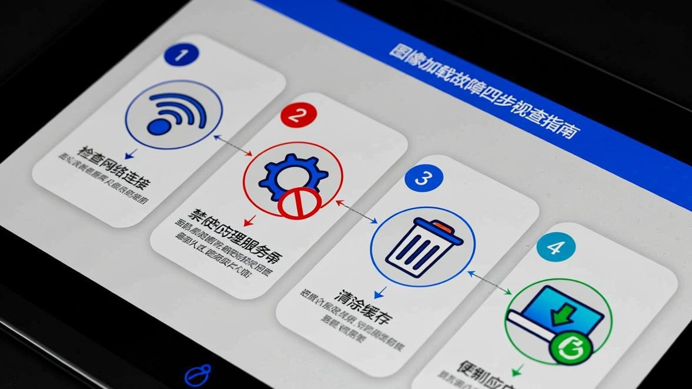

前两天我妹突然拿她手机过来问我："哥，我Telegram里的图片怎么都看不了了，一直显示那个破圈在转，转了半天也不出来，是不是手机坏了？"我拿过来一看，还真是——所有聊天里的图片都是那个转圈的加载图标，等了三五分钟也不出来一张。
说实话，这问题我也遇到过，而且不止一次。有时候好好的突然就看不了图片了（如果是图片空白不显示的情况，原因可能不太一样），有时候是更新完Telegram之后开始的，还有时候是手机重启完就这样了。刚开始我也以为是网络问题，后来发现不是——微信能刷朋友圈，微博能看图，就Telegram不行。
折腾了一晚上，把网上能找到的方法都试了一遍，终于搞定了。现在把试过的所有方法都写下来，你可以按顺序一个个试，基本都能解决。
先说说这问题到底是啥情况
就是你在Telegram里打开任何一个聊天窗口，里面的图片要么显示那个转圈的加载动画一直转，要么直接显示"图片无法加载"的提示。有时候是最近发的图片看不了，有时候是所有图片（包括以前能看的）都看不了。
我遇到过两种情况：一种是刚发的图片看不了，但以前的图片还能看；另一种是全部图片都看不了，连表情包都加载不出来。如果你也是这情况，下面的方法应该能帮到你。

方法一：先试试最容易的——清除Telegram缓存
这个方法我愿称之为"万能第一步"，因为大部分时候就是缓存太多了。Telegram会自动把你看过的图片、视频、表情包都存到手机里，时间久了缓存数据能有好几个G，多了就容易出问题。如果你想更彻底地清理，可以看看这篇缓存深度清理教程。
步骤 1
打开Telegram，点右上角那个三条横线的菜单按钮
步骤 2
找到"设置"（Settings），点进去
步骤 3
往下滑，找到"高级"（Advanced）这个选项，点进去
步骤 4
找到"存储与数据"（Storage and Data），点进去
步骤 5
你会看到一个"清除全部缓存"（Clear All Cache）的按钮，点它
步骤 6
等它清完，然后完全关闭Telegram（从后台也划掉），再重新打开
小贴士：
清除缓存不会删掉你的聊天记录，只是把本地存的图片视频删掉了，下次看的时候会重新下载。所以清完之后第一次看图片可能会慢一点，这是正常的。
我妹的手机就是这个方法搞定的。她手机里Telegram缓存有3个多G，清完重新打开，图片立马就能看了。说实话我都无语了，就这么简单的事折腾那么久。
方法二：检查你的网络设置——特别是用了某些"特殊工具"的
如果清完缓存还是不行，那很可能是网络的问题。Telegram的服务器在国外，如果你在国内用，网络环境比较复杂，有时候就会加载不出来。
我自己遇到过一次，就是我手机上的那个"小飞机"（你懂的）突然不行了，但我也没注意到，结果打开Telegram怎么都加载不出图片。后来发现是工具的问题，换了一个就好了。
步骤 1
先试试切换网络：从WiFi换到移动数据，或者反过来
步骤 2
如果用了网络工具，试试换一个节点，或者换个工具试试
步骤 3
有时候是DNS的问题，可以试试改手机的DNS（这个稍微复杂一点，不会的话可以搜一下"手机改DNS"）
步骤 4
还有一个偏方：把Telegram完全关掉，等个十几秒再打开，有时候就好了
说个真实的：
我有个同事说他试过一个很离谱的方法——把手机飞行模式开一会再关掉，然后Telegram就能加载图片了。我试了下居然真的有用，虽然不知道原理是啥，但你可以试试，反正也不麻烦。
方法三：重新安装Telegram（真的有用）
如果上面两个方法都不行，那就只能放大招了——卸载重装。我知道这方法很麻烦，因为你要重新登录、重新加群、重新设置，但说实话，这是最有效的一个方法。
我自己的手机就是清缓存、换网络都没用，最后卸载重装才好的。装完重新登录，所有图片立马就能看了，也不知道是哪里的问题，但就是好了。
步骤 1
先把你的登录手机号准备好（万一要重新验证）
步骤 2
长按Telegram图标，选择"卸载"（Android）或长按图标选"删除应用"（iOS）
步骤 3
去应用商店重新下载Telegram（尽量用官方版，别用修改版）
步骤 4
装完之后登录你的账号，等它同步完聊天记录
步骤 5
然后试试看能不能加载图片了
重要提醒：
卸载之前最好确认一下：你的聊天记录是存在Telegram云端的，所以卸载不会丢聊天记录。但如果你有没备份的本地文件，最好先备份一下。还有，如果你用了Telegram的"秘密聊天"功能，那些记录卸载就没了，要注意。
方法四：看看是不是存储权限的问题（Android专属）
这个是我后来才知道的。Android手机有个存储权限，如果Telegram没有这个权限，它就没法把下载的图片存到手机里，自然也就显示不出来。
我弟的手机就是这个问题。他不知道咋把Telegram的存储权限给关了，结果图片一直加载不出来。后来我帮他检查一下权限，发现果然是关着的，打开就好了。
步骤 1
打开手机的"设置"
步骤 2
找到"应用管理"或"应用权限"（不同手机可能名字不一样）
步骤 3
在应用列表里找到Telegram
步骤 4
点进去，找到"权限"这个选项
步骤 5
看看"存储空间"或"存储权限"是不是打开的，如果是关着的，打开它
步骤 6
然后重启一下Telegram试试
方法五：iOS用户专属的几个坑
iOS用户如果遇到这问题，除了上面说的清缓存、重装之外，还有几个iOS特有的坑：
第一个是"低数据模式"。iOS有个功能叫"低数据模式"，打开之后会限制应用的后台数据使用，有时候会导致Telegram加载不了图片。你可以去"设置 -> 蜂窝网络 -> 蜂窝数据选项 -> 低数据模式"里看看是不是打开了，如果是，关掉试试。
第二个是"后台App刷新"。如果把这个关了，Telegram在后台就没法预加载图片，有时候会导致打开聊天窗口时图片加载很慢或者加载不出来。去"设置 -> 通用 -> 后台App刷新"里把Telegram的开关打开就好了。
第三个是iCloud的问题。如果你的iPhone存储空间不够了，iOS会把一些数据自动传到iCloud上，有时候会导致Telegram的本地数据出问题。这个情况比较少见，但如果你iPhone经常提示存储空间不足，可以留意一下。
我同事说的几个"偏方"（不知道有没有用，但试试也不亏）
我同事说他试过几个很离谱的方法，居然有时候有用：
1. 把手机时间调一下再调回来（他说是时区的问题，我不太懂但他说有用） 2. 换个Telegram账号登录试试（看看是不是账号本身的问题） 3. 如果是群里的图片看不了，试试让群里其他人发一张新的图片，有时候是某张图片卡住了导致后面的都加载不出来 4. 把Telegram的通知关掉再打开（这个我也不知道原理，但确实有人这么说）
这些方法我没法保证有用，但试起来也不麻烦，你要是前面的方法都不行，可以试试看。
最后说一下怎么避免这问题再出现
这次搞定之后，我特意去查了一下怎么避免这问题再出现。有几个习惯你可以养成：
第一，定期清一下Telegram的缓存。我是每个月清一次，在"设置 -> 高级 -> 存储与数据"里就能清，很方便。
第二，不要用那些乱七八糟的修改版Telegram。我以前图方便用过什么"Telegram X"、"Plus Messenger"之类的，后来发现那些修改版很容易出问题，还是官方版最稳定。
第三，如果你手机存储空间经常不够，可以考虑把Telegram的"自动下载媒体"功能关掉或者调一下，具体可以参考自动下载设置详解。在"设置 -> 高级 -> 存储与数据 -> 自动下载媒体"里可以设置，比如只在WiFi环境下自动下载，或者只下载图片不下载视频，这样能省不少空间。
第四，更新Telegram的时候留意一下。有时候新版本会有bug，如果更新完突然出问题了，可以试试降级回旧版本（不过这个比较麻烦，一般也不至于）。
常见问题
好了，我能想到的所有方法都写在这里了。希望你能搞定这个问题，别像我一样折腾一晚上。如果还有什么疑问，可以去Telegram图片修复教程首页找找有没有你的问题，或者直接联系我们，我们会尽量帮你看看。
对了，如果你试了某个方法搞定了，也可以在下面评论里说一下是啥方法，这样其他人遇到同样问题的时候就能参考了。说实话，这种问题每个人的情况可能不太一样，有时候A方法对某人有用，对另一些人就没用，所以多试试总没坏处。
📱 立即下载 Telegram 最新版
更新到最新版本可修复大部分图片加载问题，官方正版安全无捆绑。